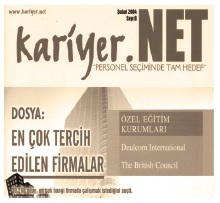
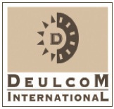
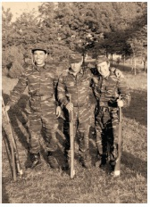

Başaran Ulusoy, çok hızlı düşünen ve hiperaktif bir insandı. Tam bana göre bir iş partneri idi. Çok iyi niyetli ama bir o kadar da külyutmaz bir insandı. Başaran Ulusoy’la tek sorunum bazen ne dediğini anlayamamamdı. Hele telefon görüşmelerinde, tek kelime bile anlamadan telefonu kapadığım zamanlar oluyordu.Projemiz 2 yıl hiç sorunsuz devam etti. Binlerce adaya TÜRSAB – Deulcom Sertifikası verdik.
TÜRSAB üyesi seyahat acenteleri bu sertifikaya sahip adaylara iş alımlarında öncelik sağlıyorlardı. Tüm sektörlere örnek bir sivil toplum çalışması oldu. Başkan, tüm televizyon programlarında bu eğitim programlarını tanıtıyordu. TÜRSAB çok şanslı bir sivil toplum kuruluşu. Başaran Ulusoy gibi bir başkan ve lider bulabileceklerini sanmıyorum. Pazar günleri saat 8’de TÜRSAB’da yaptığımız kahvaltılar, gece yarılarına kadar devam eden toplantılarda anladım ki Başaran Ulusoy bu işe hayatını adamış.
“Başkan, bu gidişle TÜRSAB’tan emekli olacaksınız gibime geliyor” demiştim. Başaran Ulusoy’dan bana kalan bir alışkanlık şu oldu: Başkan, protokol yemeğine veya bir resepsiyona giderken arabanın arka kısmına oturuyordu. Normal zamanlarda ise şoförün yanındaki koltuğa oturuyordu. Çok hoşuma gitmişti bu mütevazılığı. Şoförün yanına oturduğumda hep Başaran Ulusoy’u hatırlıyorum.
BAŞARAN ULUSOY (TÜRSAB – Türkiye Seyahat Acenteleri Birliği Başkanı): Türkiye bir turizm ülkesi, geleceğini turizme bağlayan bir ülke. Napolyon ‘para, para, para’ demiş, biz de ‘eğitim, eğitim, eğitim’ dedik. Bu eğitim çalışmalarını tüm branşlarda, yani ulaştırmada, konaklamada, deniz taşımacılığında tümünde Deulcom’un ilki var ve bu ilklere bakarak bunu yapanlar. Açıkça söyleyeyim Deulcom’la tanıştıktan sonra TÜRSAB Meslek Liseleri kurdum. Bizim bu okullarımızı kurmamıza sebep Baybars Bey’dir.
Deulcom Uluslararası Bir Marka Oluyor
Geçen zaman içinde Türkiye’nin Milli Eğitim Bakanlığı’ndan onaylı ilk İnsan Kaynakları Uzmanlığı Kursunu, ilk Üst Düzey Yönetici Asistanlığı Kursu’nu, ilk Reklam ve Halkla İlişkiler Kursu’nu, ilk Havayolları İşletmeciliği Kursu’nu, ilk Seyahat Acentesi İşletmeciliği Kursu’nu ben açtım.

Deulcom'un, 2004 yılında Kariyer Net’in yaptığı araştırmada, eğitim sektöründe, insanların en çok çalışmak istediği şirket olduğu ortaya çıktı. 1995’te eğitim sektörünün 200 reklam vereni arasında hep birinciydim. 2005 yılında Eurowards – Deulcom International Marka Gelişim Kategorisi ödülünü de bir üniversite öğrencisinin 400 dolara kurduğu marka aldı. Ve yine belki de Türkiye’de şimdiye kadar bir markanın isim hakkı bedeli olarak ödenmiş en yüksek bedel yine bu üniversite öğrencisinin kurduğu Deulcom Markası için İspanyollar tarafından ödendi. Artık Deulcom, Ekonomist’in 100 Franchising Listesi’nde yer almaya başlamıştı.
* * *
Geçen zaman içinde İstanbul, Ankara, İzmir’in dışında Bursa, Antalya, Adana, Mersin, Ceyhan Şubelerini açtım. Ayrıca eğitim sektöründeki gerçek anlamda rekabet hukukuna uygun franchising sistemini oluşturdum. Şimdi Kayseri ve Konya’nın dışında Ankara Ümitköy, Ankara Batıkent, Ankara Eryaman Deulcom Markasını başarıyla taşıyorlar.
* * *
Ancak, bundan sonra kendi şubelerimi açmak yerine Türkiye’de 112 noktada Deulcom’ların açılmasını hedef olarak belirledim. Bu da büyümekte olan kızlarımın bu işi babaları gibi ne kadar başarılı yürütüp yürütemeyeceklerini düşünürken ortaya çıktı.

Hem girişimcilerimiz, hem de Türkiye için yepyeni bir iş modeli ortaya çıkardım. Modelin temel mantığı şudur: Yüz milyarlarca lira harcayarak işinizi kurmayın. Paranız varsa bile bu yolu takip etmeyin. Benim gibi yapın, küçük bir ofisle başlayın, kendinizi tanıyın, işin tutup tutmayacağını anlayın, ondan sonra işinizi büyütün. Bu benim formülümdü. Şartlarım bunun dışında bir formül üretmeme izin vermiyordu. Böyle bir başlangıç için ciddi bir sermayeye gerek de yoktu. Sermaye bendim. Benim becerikliliğim, pratikliğim, satış yeteneğim, girişimciliğim. Kaybetseydim sadece 400 dolar kaybedecektim.
İnanıyorum ki Türkiye’de daha nice Baybars Altuntaş adayları var. İstiyorum ki el ele verelim, nice Baybars Altuntaş’lar çıksın ortaya, nice Deulcom’lar açılsın tüm Türkiye’ye. Eğer gerçekten “çok iyi satış yeteneğiniz varsa” ve siz de kendi işinizin patronu olmak istiyorsanız; yaşınız ne olursa olsun gönderin özgeçmişinizi bana.
İşte e-mailim:
baltuntas@deulcom.com.tr
Türkiye’nin En Fazla İşe Yerleştiren Adamı Olmuştum
İnsan Kaynakları konusu Türkiye’nin henüz gündemine girmeden 1992 yıllında meslek edindirme ve işe yerleştirme çalışmalarıyla bu konuyu bir uzmanlık dalı olarak Türkiye’ye kabul ettirmiştim. Şu anda faaliyet gösteren istihdam bürolarının ücretsiz modelini bundan 20 yıl önce Deulcom içinde açmıştım.
Beni Deulcom işinde kazandığım paradan daha çok, işe yerleştirdiğim gençlerin sayıca fazlalığı mutlu ediyordu. Havalimanlarında, uçaklarda “Baybars Bey, merhaba” diyen o kadar çok mezunumuz çalışıyordu ki. Türkiye’nin en çok işe yerleştiren adamı olmuştum kısa zamanda... Türkiye’nin ilk İşe Yerleştirme Merkezi kitabını da mezunlarımız için çıkarmıştık. İş Görüşmelerinde yüzde yüz başarıyı nasıl yakalayacaklarını anlatıyorduk bu kitapta. Daha sonra sanal ortamda online eğitim haline de getirdik bu programı.
TURGUT GÜR (TTYD - Türkiye Turizm Yatırımcıları Derneği Başkanı): Sektör gelişmeye başlarken tabii ki bu konudaki eğitim oldukça geri. İşte o noktada Baybars Altuntaş yine sahneye çıktı. Deulcom adında kurduğu kuruluşla Türkiye’de turizm sektörüne çok geniş yelpazede insan yetiştirdi. İnsan kaynaklarına, ticketing’e, sivil havacılığa hostes yetiştirdi, yönetici sekreterliğine insan yetiştirdi, dil eğitimi yaptı ve böylece bizim sektörümüze çok önemli katkıda bulundu. Onun yetiştirdikleri bugün sektörün her alanında müdür, genel müdür veya şef oldu.
Meraklısı için:
Deulcom: Değişik Eğitimlerin Uzmanlığında Cari Organizasyon Merkezi’nin kısaltılmışı.
“Taş yerinde ağırdır komutanım”
Bu arada askerlik vakti geldi. Manisa’nın Alaşehir ilçesinde ulaştırma bölüğünde askerliğimi tamamladım. Aklımda kalan askerlik anılarımdan biri şudur:

Bir gün bölük komutanı beni yanına çağırdı. Binbaşı olduğunu ve arzu ederse emekli olabileceğini söyledi ancak komutanın öğrenmek istediği şey eğer emekli olursa sivil hayatta kendi işini kurup başarılı olup olamayacağını merak ediyordu. Ben kısaca kendisine ‘taş yerinde ağırdır komutanım’ diyerek gerekli mesajı verdim.